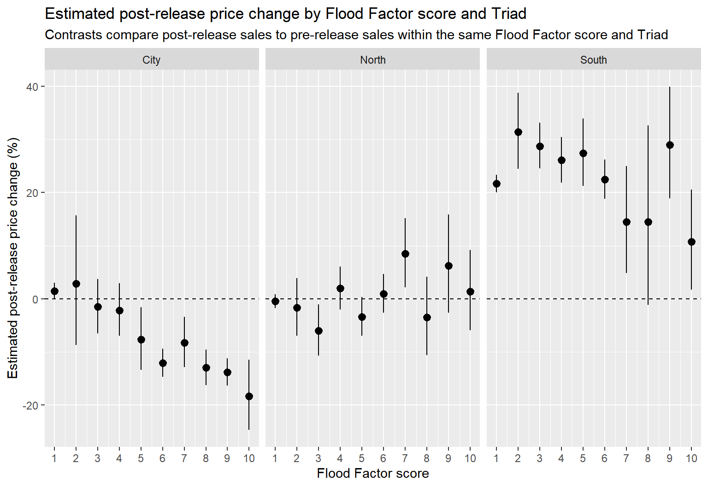
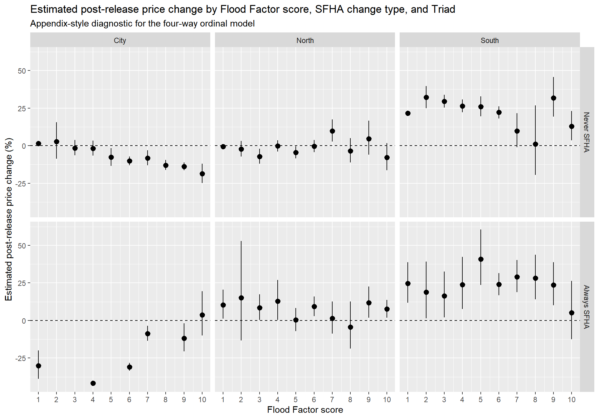
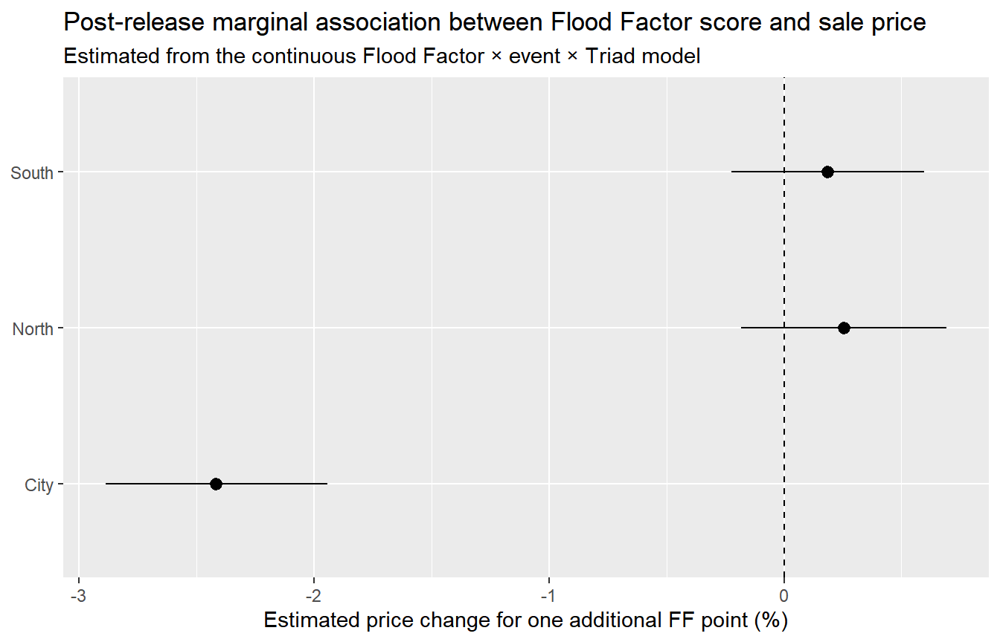
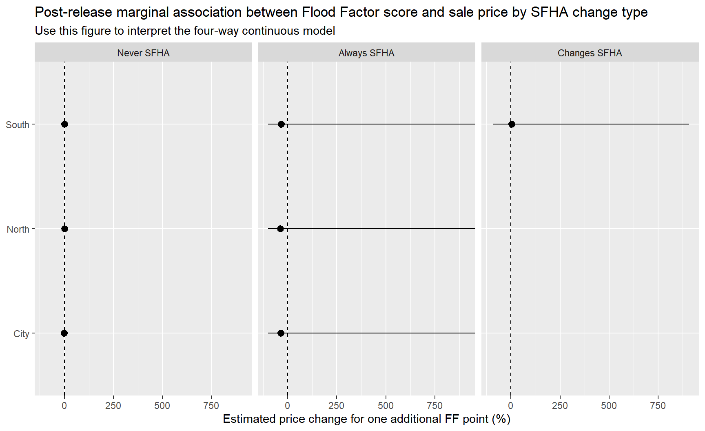

| High FF × Post | High FF × Post, identified term only | |
|---|---|---|
| high_ff_scoreTRUE | -0.517 | |
| (15358.633) | ||
| eventTRUE | 0.058*** | 0.058*** |
| (0.006) | (0.006) | |
| high_ff_scoreTRUE × eventTRUE | -0.106*** | |
| (0.011) | ||
| i(factor_var = event, var = high_ff_score, ref = FALSE) | -0.106*** | |
| (0.011) | ||
| Num.Obs. | 666566 | 666566 |
| R2 | 0.859 | 0.859 |
| R2 Within | 0.002 | 0.002 |
| Std.Errors | by: pin10 | by: pin10 |
| FE: pin | X | X |
| FE: sale_year | X | X |
FF Variable Checks
Separated Timing and Underlying Risk
The following models separate the timing of Flood Factor information release from the underlying level of flood risk. Property fixed effects absorb time-invariant parcel characteristics, while year fixed effects control for broader market conditions.
Binary High Flood Factor Models
The binary specifications estimate whether properties with high Flood Factor scores experienced differential price changes after Flood Factor information became publicly available. The specification using i(event, high_ff_score, ref = FALSE) keeps the identified post-release contrast while avoiding the time-invariant main effect that is absorbed by property fixed effects.
Event == TRUE for all sales that occurred after First Street released its flood risk data.
high_ff_score == TRUE for properties that had a flood factor score of 5 or higher
After Flood Factor information became available, high-risk properties sold for roughly 10.6% less relative to lower-risk properties, net of property fixed effects and overall market time effects.
Ordinal Flood Factor Models
The ordinal specifications estimate separate post-release effects for each Flood Factor score category. These models are useful for identifying whether the price response is concentrated among higher Flood Factor scores rather than changing linearly across the full scale.
| Ordinal | Ordinal × Triad | Change Type × Ordinal × Event × Triad | Change Type × Ordinal × Event | |
|---|---|---|---|---|
| eventTRUE | 0.061*** | 0.015* | 0.015* | 0.060*** |
| (0.006) | (0.008) | (0.008) | (0.006) | |
| ff_score_ord2 × eventTRUE | 0.023 | 0.013 | 0.012 | 0.022 |
| (0.040) | (0.061) | (0.061) | (0.041) | |
| ff_score_ord3 × eventTRUE | -0.028 | -0.030 | -0.031 | -0.030 |
| (0.020) | (0.027) | (0.027) | (0.020) | |
| ff_score_ord4 × eventTRUE | -0.015 | -0.036 | -0.033 | -0.020 |
| (0.019) | (0.027) | (0.027) | (0.020) | |
| ff_score_ord5 × eventTRUE | -0.073** | -0.095** | -0.095** | -0.080** |
| (0.027) | (0.033) | (0.033) | (0.028) | |
| ff_score_ord6 × eventTRUE | -0.118*** | -0.144*** | -0.123*** | -0.108*** |
| (0.015) | (0.017) | (0.018) | (0.015) | |
| ff_score_ord7 × eventTRUE | -0.068** | -0.101*** | -0.101*** | -0.082*** |
| (0.022) | (0.027) | (0.028) | (0.024) | |
| ff_score_ord8 × eventTRUE | -0.163*** | -0.154*** | -0.154*** | -0.181*** |
| (0.021) | (0.020) | (0.020) | (0.019) | |
| ff_score_ord9 × eventTRUE | -0.126*** | -0.163*** | -0.164*** | -0.144*** |
| (0.018) | (0.016) | (0.016) | (0.018) | |
| ff_score_ord10 × eventTRUE | -0.071+ | -0.217*** | -0.222*** | -0.114* |
| (0.038) | (0.041) | (0.041) | (0.045) | |
| eventTRUE × TriadNorth | -0.020* | -0.021** | ||
| (0.008) | (0.008) | |||
| eventTRUE × TriadSouth | 0.181*** | 0.180*** | ||
| (0.008) | (0.008) | |||
| ff_score_ord2 × eventTRUE × TriadNorth | -0.025 | -0.029 | ||
| (0.067) | (0.066) | |||
| ff_score_ord3 × eventTRUE × TriadNorth | -0.027 | -0.038 | ||
| (0.038) | (0.039) | |||
| ff_score_ord4 × eventTRUE × TriadNorth | 0.061+ | 0.038 | ||
| (0.033) | (0.032) | |||
| ff_score_ord5 × eventTRUE × TriadNorth | 0.065+ | 0.055 | ||
| (0.038) | (0.040) | |||
| ff_score_ord6 × eventTRUE × TriadNorth | 0.158*** | 0.126*** | ||
| (0.025) | (0.027) | |||
| ff_score_ord7 × eventTRUE × TriadNorth | 0.187*** | 0.201*** | ||
| (0.040) | (0.044) | |||
| ff_score_ord8 × eventTRUE × TriadNorth | 0.123** | 0.126** | ||
| (0.044) | (0.047) | |||
| ff_score_ord9 × eventTRUE × TriadNorth | 0.229*** | 0.217*** | ||
| (0.047) | (0.057) | |||
| ff_score_ord10 × eventTRUE × TriadNorth | 0.236*** | 0.147* | ||
| (0.056) | (0.064) | |||
| ff_score_ord2 × eventTRUE × TriadSouth | 0.064 | 0.070 | ||
| (0.067) | (0.067) | |||
| ff_score_ord3 × eventTRUE × TriadSouth | 0.087** | 0.094** | ||
| (0.032) | (0.032) | |||
| ff_score_ord4 × eventTRUE × TriadSouth | 0.072* | 0.071* | ||
| (0.031) | (0.031) | |||
| ff_score_ord5 × eventTRUE × TriadSouth | 0.141*** | 0.131** | ||
| (0.042) | (0.043) | |||
| ff_score_ord6 × eventTRUE × TriadSouth | 0.150*** | 0.127*** | ||
| (0.022) | (0.024) | |||
| ff_score_ord7 × eventTRUE × TriadSouth | 0.040 | -0.001 | ||
| (0.052) | (0.059) | |||
| ff_score_ord8 × eventTRUE × TriadSouth | 0.093 | -0.032 | ||
| (0.078) | (0.117) | |||
| ff_score_ord9 × eventTRUE × TriadSouth | 0.222*** | 0.245*** | ||
| (0.044) | (0.053) | |||
| ff_score_ord10 × eventTRUE × TriadSouth | 0.123* | 0.147* | ||
| (0.060) | (0.060) | |||
| change_typeAlways SFHA × eventTRUE | -0.373*** | 0.015 | ||
| (0.069) | (0.072) | |||
| change_typeAlways SFHA × ff_score_ord2 × eventTRUE | -0.130 | 0.073 | ||
| (0.102) | (0.109) | |||
| change_typeAlways SFHA × ff_score_ord3 × eventTRUE | -0.132 | 0.074 | ||
| (0.088) | (0.082) | |||
| change_typeAlways SFHA × ff_score_ord4 × eventTRUE | -0.150* | 0.057 | ||
| (0.074) | (0.100) | |||
| change_typeAlways SFHA × ff_score_ord6 × eventTRUE | 0.111 | -0.116 | ||
| (0.074) | (0.087) | |||
| change_typeAlways SFHA × ff_score_ord7 × eventTRUE | 0.368*** | 0.114 | ||
| (0.079) | (0.090) | |||
| change_typeAlways SFHA × ff_score_ord8 × eventTRUE | 0.214 | 0.328*** | ||
| (0.141) | (0.098) | |||
| change_typeAlways SFHA × ff_score_ord9 × eventTRUE | 0.397*** | 0.206* | ||
| (0.089) | (0.091) | |||
| change_typeAlways SFHA × ff_score_ord10 × eventTRUE | 0.616*** | 0.113 | ||
| (0.108) | (0.091) | |||
| change_typeAlways SFHA × eventTRUE × TriadNorth | 0.478*** | |||
| (0.082) | ||||
| change_typeAlways SFHA × eventTRUE × TriadSouth | 0.397*** | |||
| (0.088) | ||||
| change_typeAlways SFHA × ff_score_ord2 × eventTRUE × TriadNorth | 0.189 | |||
| (0.184) | ||||
| change_typeAlways SFHA × ff_score_ord3 × eventTRUE × TriadNorth | 0.183+ | |||
| (0.109) | ||||
| change_typeAlways SFHA × ff_score_ord4 × eventTRUE × TriadNorth | 0.167 | |||
| (0.107) | ||||
| change_typeAlways SFHA × ff_score_ord6 × eventTRUE × TriadNorth | -0.124 | |||
| (0.093) | ||||
| change_typeAlways SFHA × ff_score_ord7 × eventTRUE × TriadNorth | -0.553*** | |||
| (0.110) | ||||
| change_typeAlways SFHA × ff_score_ord8 × eventTRUE × TriadNorth | -0.329+ | |||
| (0.175) | ||||
| change_typeAlways SFHA × ff_score_ord9 × eventTRUE × TriadNorth | -0.437*** | |||
| (0.123) | ||||
| change_typeAlways SFHA × ff_score_ord10 × eventTRUE × TriadNorth | -0.567*** | |||
| (0.129) | ||||
| change_typeAlways SFHA × ff_score_ord4 × eventTRUE × TriadSouth | 0.105 | |||
| (0.117) | ||||
| change_typeAlways SFHA × ff_score_ord6 × eventTRUE × TriadSouth | -0.121 | |||
| (0.098) | ||||
| change_typeAlways SFHA × ff_score_ord7 × eventTRUE × TriadSouth | -0.230* | |||
| (0.117) | ||||
| change_typeAlways SFHA × ff_score_ord9 × eventTRUE × TriadSouth | -0.486*** | |||
| (0.130) | ||||
| change_typeAlways SFHA × ff_score_ord10 × eventTRUE × TriadSouth | -0.710*** | |||
| (0.159) | ||||
| Num.Obs. | 666364 | 666364 | 666364 | 666364 |
| R2 | 0.859 | 0.861 | 0.861 | 0.859 |
| R2 Within | 0.002 | 0.012 | 0.013 | 0.002 |
| Std.Errors | by: pin10 | by: pin10 | by: pin10 | by: pin10 |
| FE: pin | X | X | X | X |
| FE: sale_year | X | X | X | X |

The ordinal marginal effects are the clearest way to communicate the nonlinear pattern. Lower Flood Factor scores generally show smaller estimated price responses, while higher scores show larger negative post-release effects.
The following marginal effects summarize the estimated post-release price change for each Flood Factor score across Cook County regions.
| Triad | ff_score_ord | estimate | std.error | conf.low | conf.high | pct_change | pct_low | pct_high | p.value |
|---|---|---|---|---|---|---|---|---|---|
| City | 1 | 0.01 | 0.01 | 0.00 | 0.03 | 1.49 | 0.00 | 2.99 | 0.05 |
| City | 2 | 0.03 | 0.06 | -0.09 | 0.15 | 2.81 | -8.65 | 15.71 | 0.65 |
| City | 3 | -0.02 | 0.03 | -0.07 | 0.04 | -1.52 | -6.48 | 3.71 | 0.56 |
| City | 4 | -0.02 | 0.03 | -0.07 | 0.03 | -2.15 | -6.96 | 2.90 | 0.40 |
| City | 5 | -0.08 | 0.03 | -0.14 | -0.02 | -7.69 | -13.41 | -1.60 | 0.01 |
| City | 6 | -0.13 | 0.02 | -0.16 | -0.10 | -12.08 | -14.71 | -9.38 | 0.00 |
| City | 7 | -0.09 | 0.03 | -0.14 | -0.03 | -8.27 | -12.89 | -3.41 | 0.00 |
| City | 8 | -0.14 | 0.02 | -0.18 | -0.10 | -12.96 | -16.23 | -9.57 | 0.00 |
| City | 9 | -0.15 | 0.02 | -0.18 | -0.12 | -13.81 | -16.36 | -11.17 | 0.00 |
| City | 10 | -0.20 | 0.04 | -0.28 | -0.12 | -18.35 | -24.68 | -11.50 | 0.00 |
| North | 1 | -0.00 | 0.01 | -0.02 | 0.01 | -0.48 | -1.79 | 0.84 | 0.47 |
| North | 2 | -0.02 | 0.03 | -0.07 | 0.04 | -1.69 | -6.96 | 3.88 | 0.54 |
| North | 3 | -0.06 | 0.03 | -0.11 | -0.01 | -5.97 | -10.66 | -1.03 | 0.02 |
| North | 4 | 0.02 | 0.02 | -0.02 | 0.06 | 1.99 | -1.97 | 6.10 | 0.33 |
| North | 5 | -0.03 | 0.02 | -0.07 | 0.00 | -3.40 | -6.95 | 0.30 | 0.07 |
| North | 6 | 0.01 | 0.02 | -0.03 | 0.05 | 0.96 | -2.65 | 4.71 | 0.61 |
| North | 7 | 0.08 | 0.03 | 0.02 | 0.14 | 8.49 | 2.17 | 15.20 | 0.01 |
| North | 8 | -0.04 | 0.04 | -0.11 | 0.04 | -3.51 | -10.64 | 4.18 | 0.36 |
| North | 9 | 0.06 | 0.04 | -0.03 | 0.15 | 6.22 | -2.61 | 15.86 | 0.17 |
| North | 10 | 0.01 | 0.04 | -0.06 | 0.09 | 1.37 | -5.88 | 9.18 | 0.72 |
| South | 1 | 0.20 | 0.01 | 0.18 | 0.21 | 21.64 | 20.00 | 23.31 | 0.00 |
| South | 2 | 0.27 | 0.03 | 0.22 | 0.33 | 31.41 | 24.43 | 38.78 | 0.00 |
| South | 3 | 0.25 | 0.02 | 0.22 | 0.29 | 28.74 | 24.52 | 33.10 | 0.00 |
| South | 4 | 0.23 | 0.02 | 0.20 | 0.27 | 26.07 | 21.84 | 30.45 | 0.00 |
| South | 5 | 0.24 | 0.03 | 0.19 | 0.29 | 27.40 | 21.21 | 33.92 | 0.00 |
| South | 6 | 0.20 | 0.02 | 0.17 | 0.23 | 22.47 | 18.85 | 26.21 | 0.00 |
| South | 7 | 0.14 | 0.04 | 0.05 | 0.22 | 14.45 | 4.81 | 24.98 | 0.00 |
| South | 8 | 0.14 | 0.08 | -0.01 | 0.28 | 14.49 | -1.17 | 32.64 | 0.07 |
| South | 9 | 0.25 | 0.04 | 0.17 | 0.34 | 28.97 | 18.90 | 39.91 | 0.00 |
| South | 10 | 0.10 | 0.04 | 0.02 | 0.19 | 10.72 | 1.69 | 20.56 | 0.02 |
These models are more saturated and should usually be treated as appendix or robustness material. They are useful for checking whether Flood Factor effects differ depending on FEMA floodplain status, but the number of interaction cells makes direct coefficient interpretation difficult.
| change_type | Triad | ff_score_ord | estimate | std.error | conf.low | conf.high | pct_change | pct_low | pct_high | p.value |
|---|---|---|---|---|---|---|---|---|---|---|
| Never SFHA | City | 1 | 0.02 | 0.01 | 0.00 | 0.03 | 1.52 | 0.03 | 3.03 | 0.05 |
| Never SFHA | City | 2 | 0.03 | 0.06 | -0.09 | 0.15 | 2.79 | -8.67 | 15.68 | 0.65 |
| Never SFHA | City | 3 | -0.02 | 0.03 | -0.07 | 0.04 | -1.54 | -6.50 | 3.69 | 0.56 |
| Never SFHA | City | 4 | -0.02 | 0.03 | -0.07 | 0.03 | -1.78 | -6.63 | 3.31 | 0.49 |
| Never SFHA | City | 5 | -0.08 | 0.03 | -0.14 | -0.02 | -7.71 | -13.42 | -1.62 | 0.01 |
| Never SFHA | City | 6 | -0.11 | 0.02 | -0.14 | -0.08 | -10.19 | -13.01 | -7.27 | 0.00 |
| Never SFHA | City | 7 | -0.09 | 0.03 | -0.14 | -0.03 | -8.26 | -13.14 | -3.11 | 0.00 |
| Never SFHA | City | 8 | -0.14 | 0.02 | -0.18 | -0.10 | -12.98 | -16.25 | -9.59 | 0.00 |
| Never SFHA | City | 9 | -0.15 | 0.02 | -0.18 | -0.12 | -13.86 | -16.45 | -11.19 | 0.00 |
| Never SFHA | City | 10 | -0.21 | 0.04 | -0.29 | -0.13 | -18.69 | -24.90 | -11.97 | 0.00 |
| Never SFHA | North | 1 | -0.01 | 0.01 | -0.02 | 0.01 | -0.63 | -1.93 | 0.69 | 0.35 |
| Never SFHA | North | 2 | -0.02 | 0.03 | -0.08 | 0.03 | -2.24 | -7.33 | 3.12 | 0.41 |
| Never SFHA | North | 3 | -0.07 | 0.03 | -0.13 | -0.02 | -7.19 | -12.00 | -2.12 | 0.01 |
| Never SFHA | North | 4 | -0.00 | 0.02 | -0.04 | 0.04 | -0.19 | -3.86 | 3.62 | 0.92 |
| Never SFHA | North | 5 | -0.05 | 0.02 | -0.09 | -0.00 | -4.53 | -8.53 | -0.36 | 0.03 |
| Never SFHA | North | 6 | -0.00 | 0.02 | -0.04 | 0.04 | -0.34 | -4.22 | 3.71 | 0.87 |
| Never SFHA | North | 7 | 0.09 | 0.03 | 0.03 | 0.16 | 9.77 | 2.67 | 17.37 | 0.01 |
| Never SFHA | North | 8 | -0.03 | 0.04 | -0.12 | 0.05 | -3.40 | -11.23 | 5.11 | 0.42 |
| Never SFHA | North | 9 | 0.05 | 0.06 | -0.06 | 0.15 | 4.69 | -6.06 | 16.68 | 0.41 |
| Never SFHA | North | 10 | -0.08 | 0.05 | -0.18 | 0.02 | -7.77 | -16.33 | 1.67 | 0.10 |
| Never SFHA | South | 1 | 0.20 | 0.01 | 0.18 | 0.21 | 21.60 | 19.95 | 23.26 | 0.00 |
| Never SFHA | South | 2 | 0.28 | 0.03 | 0.22 | 0.33 | 32.10 | 24.87 | 39.76 | 0.00 |
| Never SFHA | South | 3 | 0.26 | 0.02 | 0.23 | 0.29 | 29.60 | 25.40 | 33.95 | 0.00 |
| Never SFHA | South | 4 | 0.23 | 0.02 | 0.20 | 0.27 | 26.35 | 22.20 | 30.65 | 0.00 |
| Never SFHA | South | 5 | 0.23 | 0.03 | 0.18 | 0.28 | 26.02 | 19.50 | 32.91 | 0.00 |
| Never SFHA | South | 6 | 0.20 | 0.02 | 0.17 | 0.23 | 22.14 | 18.16 | 26.26 | 0.00 |
| Never SFHA | South | 7 | 0.09 | 0.05 | -0.01 | 0.20 | 9.71 | -1.03 | 21.62 | 0.08 |
| Never SFHA | South | 8 | 0.01 | 0.12 | -0.22 | 0.24 | 0.99 | -19.53 | 26.74 | 0.93 |
| Never SFHA | South | 9 | 0.28 | 0.05 | 0.18 | 0.38 | 31.87 | 19.35 | 45.70 | 0.00 |
| Never SFHA | South | 10 | 0.12 | 0.04 | 0.03 | 0.21 | 12.83 | 3.47 | 23.03 | 0.01 |
| Always SFHA | City | 1 | -0.36 | 0.07 | -0.49 | -0.22 | -30.09 | -38.91 | -20.00 | 0.00 |
| Always SFHA | City | 4 | -0.54 | 0.01 | -0.55 | -0.53 | -41.77 | -42.50 | -41.04 | 0.00 |
| Always SFHA | City | 6 | -0.37 | 0.02 | -0.41 | -0.33 | -30.88 | -33.45 | -28.21 | 0.00 |
| Always SFHA | City | 7 | -0.09 | 0.03 | -0.14 | -0.04 | -8.70 | -13.49 | -3.65 | 0.00 |
| Always SFHA | City | 9 | -0.13 | 0.05 | -0.23 | -0.02 | -11.82 | -20.68 | -1.96 | 0.02 |
| Always SFHA | City | 10 | 0.04 | 0.07 | -0.11 | 0.18 | 3.66 | -10.05 | 19.46 | 0.62 |
| Always SFHA | North | 1 | 0.10 | 0.04 | 0.01 | 0.19 | 10.40 | 1.17 | 20.48 | 0.03 |
| Always SFHA | North | 2 | 0.14 | 0.14 | -0.14 | 0.42 | 15.12 | -13.27 | 52.81 | 0.33 |
| Always SFHA | North | 3 | 0.08 | 0.04 | 0.00 | 0.16 | 8.57 | 0.33 | 17.48 | 0.04 |
| Always SFHA | North | 4 | 0.12 | 0.06 | 0.00 | 0.24 | 12.84 | 0.28 | 26.97 | 0.04 |
| Always SFHA | North | 5 | 0.00 | 0.04 | -0.07 | 0.08 | 0.35 | -7.08 | 8.37 | 0.93 |
| Always SFHA | North | 6 | 0.09 | 0.03 | 0.03 | 0.15 | 9.28 | 2.91 | 16.03 | 0.00 |
| Always SFHA | North | 7 | 0.01 | 0.05 | -0.09 | 0.12 | 1.35 | -8.76 | 12.59 | 0.80 |
| Always SFHA | North | 8 | -0.04 | 0.08 | -0.21 | 0.12 | -4.38 | -18.81 | 12.61 | 0.59 |
| Always SFHA | North | 9 | 0.11 | 0.05 | 0.02 | 0.20 | 11.69 | 1.84 | 22.49 | 0.02 |
| Always SFHA | North | 10 | 0.07 | 0.03 | 0.02 | 0.13 | 7.62 | 1.91 | 13.65 | 0.01 |
| Always SFHA | South | 1 | 0.22 | 0.06 | 0.11 | 0.33 | 24.59 | 11.82 | 38.81 | 0.00 |
| Always SFHA | South | 2 | 0.17 | 0.08 | 0.01 | 0.33 | 18.81 | 1.39 | 39.22 | 0.03 |
| Always SFHA | South | 3 | 0.15 | 0.07 | 0.02 | 0.28 | 16.39 | 2.12 | 32.65 | 0.02 |
| Always SFHA | South | 4 | 0.21 | 0.07 | 0.07 | 0.35 | 23.75 | 7.56 | 42.38 | 0.00 |
| Always SFHA | South | 5 | 0.34 | 0.07 | 0.21 | 0.47 | 40.85 | 23.58 | 60.52 | 0.00 |
| Always SFHA | South | 6 | 0.21 | 0.03 | 0.16 | 0.27 | 23.95 | 16.80 | 31.52 | 0.00 |
| Always SFHA | South | 7 | 0.26 | 0.04 | 0.17 | 0.34 | 29.07 | 18.80 | 40.22 | 0.00 |
| Always SFHA | South | 8 | 0.25 | 0.06 | 0.13 | 0.36 | 28.11 | 14.14 | 43.80 | 0.00 |
| Always SFHA | South | 9 | 0.21 | 0.06 | 0.10 | 0.33 | 23.57 | 10.12 | 38.68 | 0.00 |
| Always SFHA | South | 10 | 0.05 | 0.09 | -0.13 | 0.23 | 5.20 | -12.45 | 26.41 | 0.59 |

The following table identifies coefficients omitted from interpretation due to extremely large standard errors or lack of identification under the fixed-effects structure. Large standard errors typically indicate that a coefficient is not identified within the property fixed-effects framework because the underlying variable does not vary within parcels over time, or because certain interaction combinations contain extremely sparse observations.
Continuous Flood Factor Models
The continuous specifications estimate the marginal price effect associated with a one-point increase in Flood Factor score after public release of the information.
| Continuous | Continuous × Triad | Change Type × Continuous × Event × Triad | Change Type × Continuous × Event | |
|---|---|---|---|---|
| eventTRUE | 0.080*** | 0.041*** | 0.039*** | 0.081*** |
| (0.007) | (0.009) | (0.009) | (0.007) | |
| env_flood_fs_factor × eventTRUE | -0.018*** | -0.024*** | -0.022*** | -0.019*** |
| (0.002) | (0.002) | (0.002) | (0.002) | |
| eventTRUE × TriadNorth | -0.051*** | -0.047*** | ||
| (0.010) | (0.010) | |||
| eventTRUE × TriadSouth | 0.157*** | 0.158*** | ||
| (0.010) | (0.010) | |||
| env_flood_fs_factor × eventTRUE × TriadNorth | 0.027*** | 0.021*** | ||
| (0.003) | (0.004) | |||
| env_flood_fs_factor × eventTRUE × TriadSouth | 0.026*** | 0.024*** | ||
| (0.003) | (0.003) | |||
| change_typeAlways SFHA × eventTRUE | -0.511*** | -0.003 | ||
| (0.052) | (0.059) | |||
| change_typeChanges SFHA × eventTRUE | -0.099 | 0.024 | ||
| (0.062) | (0.062) | |||
| change_typeAlways SFHA × env_flood_fs_factor × eventTRUE | 0.043*** | 0.002 | ||
| (0.010) | (0.011) | |||
| change_typeChanges SFHA × env_flood_fs_factor × eventTRUE | 0.033 | 0.054** | ||
| (0.021) | (0.021) | |||
| change_typeAlways SFHA × eventTRUE × TriadNorth | 0.622*** | |||
| (0.065) | ||||
| change_typeAlways SFHA × eventTRUE × TriadSouth | 0.539*** | |||
| (0.073) | ||||
| change_typeAlways SFHA × env_flood_fs_factor × eventTRUE × TriadNorth | -0.046*** | |||
| (0.012) | ||||
| change_typeAlways SFHA × env_flood_fs_factor × eventTRUE × TriadSouth | -0.047*** | |||
| (0.013) | ||||
| Num.Obs. | 666564 | 666564 | 666564 | 666564 |
| R2 | 0.859 | 0.861 | 0.861 | 0.859 |
| R2 Within | 0.002 | 0.012 | 0.013 | 0.002 |
| Std.Errors | by: pin10 | by: pin10 | by: pin10 | by: pin10 |
| FE: pin | X | X | X | X |
| FE: sale_year | X | X | X | X |
The following marginal effects estimate the post-release association between a one-point increase in Flood Factor score and sale price across Cook County regions.
| Triad | estimate | std.error | conf.low | conf.high | pct_change | pct_low | pct_high | p.value |
|---|---|---|---|---|---|---|---|---|
| City | -0.02 | 0.00 | -0.03 | -0.02 | -2.42 | -2.89 | -1.94 | 0.00 |
| North | 0.00 | 0.00 | -0.00 | 0.01 | 0.25 | -0.18 | 0.69 | 0.25 |
| South | 0.00 | 0.00 | -0.00 | 0.01 | 0.19 | -0.22 | 0.60 | 0.38 |

The continuous marginal effects summarize how strongly prices changed with each additional Flood Factor point after information release. This is usually the most compact way to present regional heterogeneity in the continuous specification.
These models are more saturated and should usually be treated as appendix or robustness material. They are useful for checking whether Flood Factor effects differ depending on FEMA floodplain status, but the number of interaction cells makes direct coefficient interpretation difficult.
| change_type | Triad | estimate | std.error | conf.low | conf.high | pct_change | pct_low | pct_high | p.value |
|---|---|---|---|---|---|---|---|---|---|
| Never SFHA | City | -0.02 | 0.00 | -0.03 | -0.02 | -2.18 | -2.66 | -1.70 | 0.00 |
| Never SFHA | North | -0.00 | 0.00 | -0.01 | 0.00 | -0.08 | -0.58 | 0.43 | 0.76 |
| Never SFHA | South | 0.00 | 0.00 | -0.00 | 0.01 | 0.18 | -0.28 | 0.65 | 0.45 |
| Always SFHA | City | -0.43 | 8411.74 | -16487.15 | 16486.28 | -35.21 | -100.00 | 1.00 | |
| Always SFHA | North | -0.46 | 8411.59 | -16486.87 | 16485.95 | -36.81 | -100.00 | 1.00 | |
| Always SFHA | South | -0.39 | 10585.78 | -20748.14 | 20747.35 | -32.60 | -100.00 | 1.00 | |
| Changes SFHA | South | 0.03 | 1.16 | -2.24 | 2.31 | 3.53 | -89.36 | 906.93 | 0.98 |

The following table identifies coefficients omitted from interpretation due to extremely large standard errors or lack of identification under the fixed-effects structure. Large standard errors typically indicate that a coefficient is not identified within the property fixed-effects framework because the underlying variable does not vary within parcels over time, or because certain interaction combinations contain extremely sparse observations.